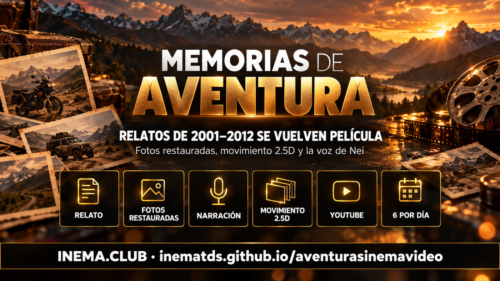

aventurasinemavideo es el proyecto que produce la serie Memorias de Aventura. Toma artículos reales del archivo de INEMA Aventura (aventura.inema.club, de 2001 a 2012), con el relato y las fotos que enviaron los propios aventureros, y convierte cada uno en una película narrada de uno a tres minutos. Es para quienes vivieron esas historias y para quienes disfrutan de la aventura: las películas se publican gratis en el canal Aventuras INEMA en YouTube. Para verlas, basta con abrir el canal; el repositorio guarda las reglas y el motor que monta las películas.
Qué es
Un archivo de 20 años que vuelve a contarse
Entre 2001 y 2012, INEMA Aventura reunió relatos y álbumes de fotos de motociclistas, aficionados a los jeeps, escaladores y viajeros. Esta serie saca esas historias del archivo y las vuelve a contar en video.

📖 Solo lo que ocurrió
El guion parte del relato original y de las fotos del álbum. No se inventa nada más allá de lo que muestran el texto y las imágenes.
📷 Fotos antiguas renovadas
Las fotos de cámaras digitales de los años 2000 se restauran y cobran movimiento: profundidad, pilas, franjas y mosaicos.
🎙️ La voz de Nei
La narración usa la voz de Nei Maldaner, creador de INEMA, y cada historia recibe banda sonora y rótulos.
Cómo funciona
Del artículo al video en el canal
Cada episodio pasa por las mismas etapas. En palabras sencillas:
Elegir el artículo→Seleccionar las mejores fotos→Escribir el guion→Grabar la narración→Restaurar las fotos→Dar movimiento→Montar la película→Publicar en YouTube→Avisar al autor
1
Artículo con relato y fotos
Solo se incluye un artículo con texto propio sobre la aventura (al menos 250 palabras) y un álbum con al menos 12 fotos grandes.
2
Guion y voz
El relato se convierte en 9 a 15 bloques de narración. Los años y números se escriben con letras, y la narración se revisa palabra por palabra antes de continuar.
3
Imagen y montaje
Se restauran unas 12 fotos, se les añade un mapa de profundidad para el efecto 2.5D y se montan con la voz, la música y los rótulos.
Las fotos del álbum aparecen en pilas, franjas y mosaicos; aquí, en el episodio de Telmo Machado da Silva.Foto restaurada con movimiento de profundidad: la carretera de los Andes durante el viaje en moto de 2004.
La regla del día
6 videos al día, hasta agotar el archivo
La meta es convertir en video cada artículo del archivo que tenga relato e imágenes. Para lograrlo, la serie sigue un ritmo fijo.
6
Videos al día
Se publican seis episodios al día en el canal Aventuras INEMA.
2
De suscriptores
Dos videos al día basados en artículos de suscriptores del archivo. Se cuenta el artículo, no la persona.
4
De otros autores
Cuatro videos sobre distintos temas (moto, senderismo, escalada, jeep, cabalgata, viaje), como máximo uno por persona.
✉️
Aviso al autor
Quien envió la historia recibe por correo electrónico el enlace del video, el enlace de descarga y el enlace del canal.
Episodios publicados
Los primeros 6 episodios
Todos están en el canal Aventuras INEMA. Haz clic en la imagen para verlos.
#1 · Telmo Machado da Silva — 6.700 km en moto por Sudamérica (2004). Ver ▸#2 · Lameiros do Sul — 11 jeeps hasta Bonito y el Pantanal (2006). Ver ▸#3 · Naoki Arima y Ricardo Rutz — escalada en Chile (2002). Ver ▸#4 · Natan Smaniotto — de padre a hijo en las pistas (2002–2005). Ver ▸#5 · Ana Cristina Sommer — ropa para mujeres motociclistas (2002). Ver ▸#6 · Guilherme Borges — Andes Kids Expedition (2003). Ver ▸
Paso a paso · entre bastidores
Cómo se monta un episodio
Para quienes quieran entender (o reproducir) el proceso. Los scripts están en la carpeta motor/ del repositorio; el ejemplo completo es el episodio 6 (motor/filme_exemplo_guilherme.py y motor/roteiro_exemplo_guilherme.md (x). Todo se ejecuta en el ordenador local, con voz y restauración de imágenes mediante la suscripción.
1
Preparar el artículo y el álbum
Cada episodio tiene su propia carpeta, copiada de un episodio terminado. Se reúnen el texto del artículo y las fotos grandes del álbum, que se clasifican por categoría y puntuación.
# carpeta del episodio, a partir de uno terminadocp -r ~/projetos/output/memorias-aventura-guilherme ~/projetos/output/memorias-aventura-<slug>
2
Escribir el guion
El archivo roteiro.md (x) tiene de 9 a 15 bloques y solo incluye lo que cuentan el relato y las fotos. Los años y números se escriben con letras en la narración para que la voz no se equivoque.
# plantilla de guioncat motor/roteiro_exemplo_guilherme.md
3
Grabar y revisar la narración
Un audio por bloque, con la voz de Nei. Después se recorta, se ajustan el ritmo y el volumen, y se transcribe palabra por palabra. Si hay una palabra equivocada, se reescribe la frase y se graba de nuevo.
bash motor/tts.sh # narración por bloque (voz nei)python3 motor/pos_voz.py # recorte, ritmo, volumen y transcripción
4
Línea de tiempo, música y fotos
Se montan la línea de tiempo y la banda sonora (voz + música); las fotos antiguas se restauran y reciben un mapa de profundidad para el movimiento 2.5D.
La película se compone bloque a bloque (pila, franja, mosaico, profundidad y rótulos). Antes de publicarla, se revisan los fotogramas de cada bloque y la duración.
python3 filme.py # todos los bloques + montaje finalpython3 filme.py B03 # vuelve a crear un solo bloque
6
Publicar y avisar
El video se sube al canal Aventuras INEMA con yt-pubx, primero en modo de simulación para revisar el texto. Después se añade la descripción completa, se avisa al autor por correo electrónico y se registra el episodio en EPISODIOS.md (x).
Lo que ya se hizo y lo que todavía limita el ritmo.
Hecho
6 episodios publicadosLas seis primeras películas se publicaron en el canal Aventuras INEMA los días 9 y 10 de octubre de 2026.
Ahora
Ritmo de 6 al díaCola de publicación con un nuevo intento automático cuando YouTube alcanza el límite diario de subidas.
Límites
Canal nuevo y cuota de YouTubeMientras no se verifique el canal, los videos se publican sin miniatura personalizada y con un límite diario bajo de subidas; la cuota diaria de la API de YouTube también limita cuántos videos se pueden subir al día.
Meta
Todo el archivo en videoCada artículo de INEMA Aventura con relato e imágenes se convierte en un episodio de la serie.